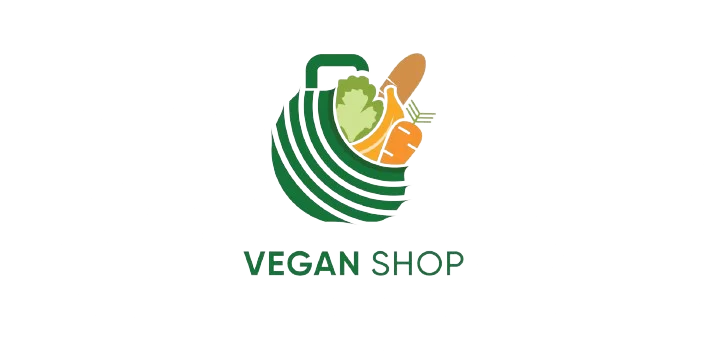

Explora restaurantes veganos 
Descubre una gran variedad de restaurantes veganos, vegetarianos y aptos para veganos cerca de ti en HappyCow. También disponible en una práctica aplicación para Android e iOS. HappyCow va más allá de los restaurantes, ayudándote a encontrar tiendas veganas, panaderías, heladerías y hoteles con opciones veganas. Tu guía de restaurantes veganos en Barcelona.

Encuentra supermercados 
ExploraSupperVeggiepara obtener información completa sobre los productos veganos disponibles en las principales cadenas de supermercados de Cataluña.
Descubre tiendas veganas 
Entra enFAADApara encontrar una lista seleccionada de las principales tiendas de alimentación vegana de Cataluña.